Oktos Workshop çatı katı: İbrahim Arda Bişgin'in portfolyosu. Modern Balbal serisi (Kapital Kağan, Kadere Kınalı, Akademi Atlısı), döküm ve baskı işleri, dijital modelden döküme sekiz adımlık üretim süreci. Sahne için JavaScript gerekir.